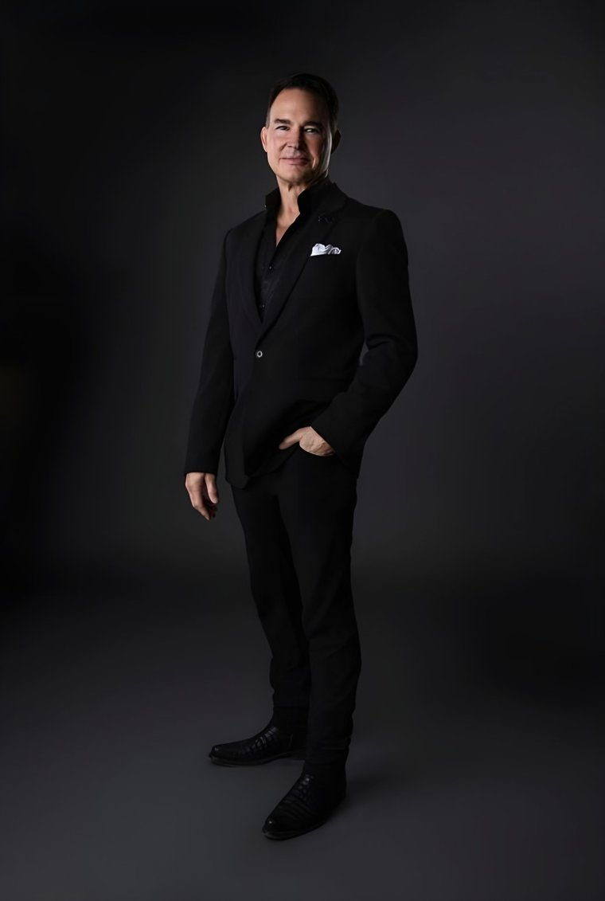
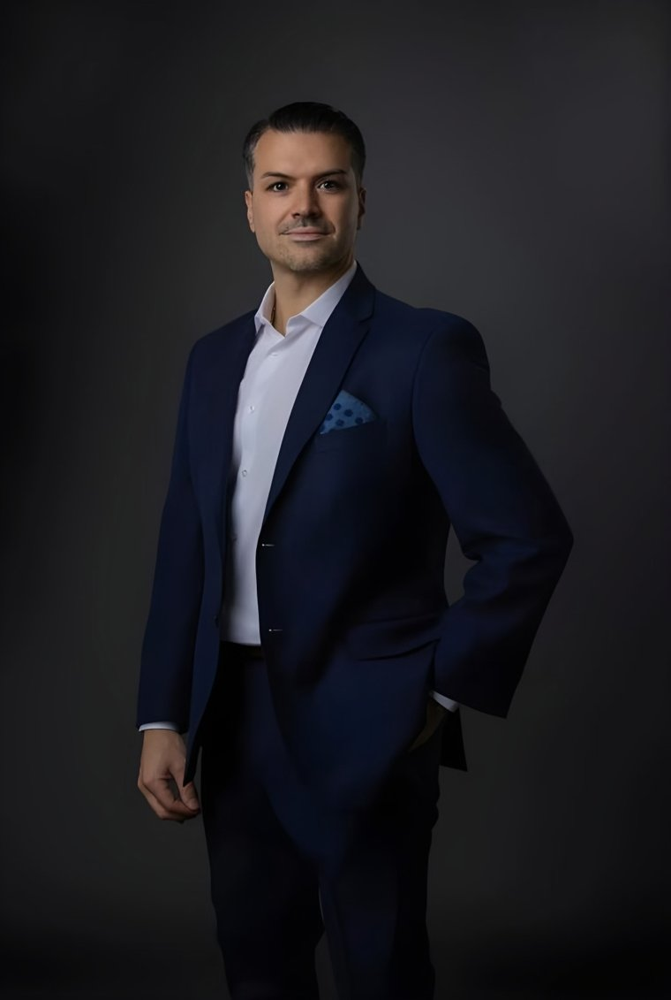
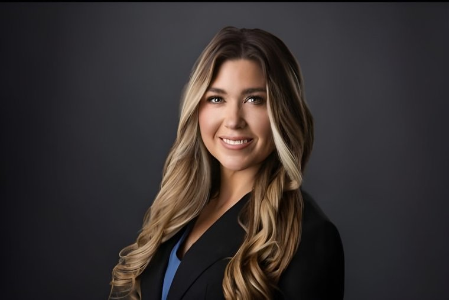
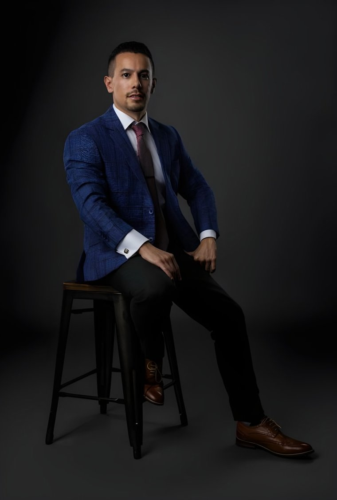

Tulsa · Oklahoma City · Est. 1998
Cosmetic surgery, mastered in Oklahoma.
Five cosmetic surgeons and the founder who trains America’s next ones — a past president of the American Academy of Cosmetic Surgery, in an AAAHC-accredited surgical villa with its own overnight guest suites. The country flies in for this work; you may only have to cross town.
Real results · interactive
Proof, before promises.
Every image is a consented Tulsa Surgical Arts patient — catalogued, consent-verified, metadata-stripped, and attributed to the operating surgeon. Drag any line.

 BeforeAfter
BeforeAfter
Drag to compare
Rhinoplasty — profile · by Dr. Cuzalina

 BeforeAfter
BeforeAfter
Drag to compare
Deep plane facelift · by Dr. Cuzalina

 BeforeAfter
BeforeAfter
Drag to compare
Tummy tuck, hi-def lipo & BBL — front · by Dr. Tolomeo
One estate · three doors
Three practices under one roof, each complete.
Pillar I
Surgical
Face, breast and body surgery by seven cosmetic surgeons — anchored by the fellowship that trains the specialty’s next generation.
- Rhinoplasty · deep plane facelift · blepharoplasty
- Breast augmentation · lift · revision
- Tummy tuck · hi-def liposculpture · BBL
- The AACS-accredited fellowship
Pillar II
Bella Roma Medical Spa
“Beauty & confidence redefined.” Injectables, advanced skin, lasers, lymphatic care — booked in one tap through the scheduler patients already use.
- BOTOX® · Jeuveau™ · Dysport · XEOMIN®
- Juvéderm · SkinVive · Radiesse · Sculptra · Versa
- Morpheus8 · CO2 Cool Peel · IPL · HydraFacial
- Lymphatic therapy · lash · brow · PMU
Pillar III
TSA Wellness
Physician-guided medical optimization led by Nurse Practitioner Valerie Baker — programs begin with a provider evaluation, never a cart.
- GLP-1 weight management · Harmony™ · Revolution™
- Peptide therapy — four guided programs
- Bio-identical HRT · pellet therapy
- Laboratory testing & ongoing supervision
Face
- Rhinoplasty
- Deep plane facelift
- Blepharoplasty
- Buccal fat removal
- Otoplasty · Brow lift
Body
- Tummy tuck
- Mommy makeover
- Hi-def liposculpture
- Brazilian butt lift
- Labiaplasty · Arm lift
The welcome
First, meet the founder.
Before you read a single credential, hear the philosophy: natural results, safety first, and a practice built like the Italian villas Dr. Cuzalina sculpts by hand. This is who will actually take care of you.
Press play — it’s the practice’s own published film.
The surgeons
Six surgeons. One standard.
Founded and led by Dr. Angelo Cuzalina, MD, DDS — past president of the American Academy of Cosmetic Surgery and of the American Board of Cosmetic Surgery, textbook editor, director of the AACS-accredited fellowship that trains America’s next cosmetic surgeons — and, per his published IntechOpen profile, more than 18,000 procedures performed.




Pricing, answered
Straight answers about cost.
You shouldn’t have to book a consult just to learn whether surgery is within reach. We publish the national average surgeon-fee data for every major procedure — sourced from the American Society of Plastic Surgeons’ member surveys — alongside what actually moves the number, and monthly financing. Your own quote is personal, all-in, and delivered at consultation.
Patient voices
In their own words.
“Dr. Angelo Cuzalina is a great surgeon and you can tell that he cares very much for what his patients want to accomplish.”
— practice testimonials page, verbatim
“I scheduled an appointment for a lower eyelid blepharoplasty… It has been 6 weeks and I’m so glad I made the decision to have this done.”
— practice testimonials page, verbatim
“Jessica is the most masterful nurse injector I know… always flawless!”
— Kathryn Neary, Google review (as republished)
Quotes appear exactly as patients published them — never edited, never invented. 4.8★ across 170 Healthgrades reviews · 5.0★ across 690+ Google reviews, as of August 2026.
Bella Roma Medical Spa
The med spa books in one tap — exactly as it does today.
Pick your injector or aesthetician — each card carries her real, site-verbatim specialty — and go straight into the same scheduler patients already use. All eleven med-spa professionals, with full profiles, live on the Bella Roma page →


TSA Wellness
GLP-1 weight management, peptide therapy & bio-identical HRT — physician-guided.
Led by Nurse Practitioner Valerie Baker. Harmony™ and Revolution™ programs, laboratory testing, and honest eligibility rules. Prescription programs begin with a provider evaluation, never a cart. That’s a promise, not a disclaimer.
Visit
Two campuses. One standard.
Tulsa — the villa
- 7322 E 91st St, Tulsa, OK 74133
- 918-392-0880
- Mon–Thu 7:15a–5:00p · Fri 7:15a–3:00p
- AAAHC-accredited surgery center · overnight guest suites
Oklahoma City — Oklahoma Surgical Arts
- 12400 Saint Andrew’s Dr, Oklahoma City, OK 73120
- 405-751-0042
- Every Tulsa surgeon serves OKC — virtual or in-person consults, surgery in either city
- Same consent, same photography, same standard
Flying in?
- Patients travel from across the country
- Virtual consultation first — surgery scheduled around your trip
- Recover in the villa’s private overnight guest suites